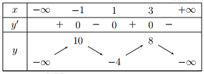
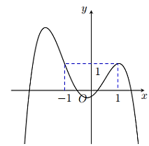
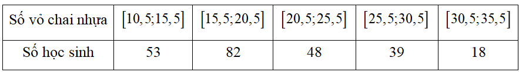
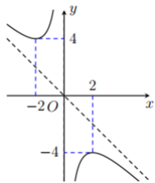
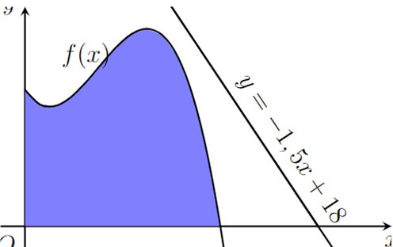
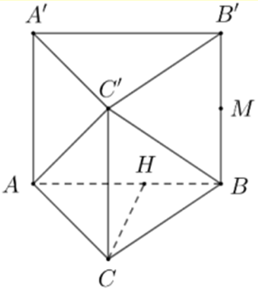

Hàm số nào dưới đây đồng biến trên khoảng \( (-\infty; +\infty) \)?
A. \( y = -x^3 - 2x + 1 \)
B. \( y = \frac{x-2}{x+1} \)
C. \( y = 3x^3 + 3x - 2 \)
D. \( y = 2x^3 - 5x + 1 \)
Chọn đáp án:
Xem lời giải
Cách giải: Xét hàm số \( y = 3x^3 + 3x - 2 \).
Đạo hàm: \( y' = 9x^2 + 3 > 0, \forall x \in \mathbb{R} \).
Vậy hàm số \( y = 3x^3 + 3x - 2 \) đồng biến trên \( \mathbb{R} \). Đáp án: C.
Câu 2:
Cho hàm số \( y = f(x) \) có đạo hàm \( f'(x) = (x^2 - 4)(x + 2)(x - 3) \) và liên tục trên \( \mathbb{R} \). Số điểm cực trị của hàm số đã cho là:
A. 5
B. 2
C. 3
D. 1
Chọn đáp án:
Xem lời giải
Cách giải: Tìm nghiệm của phương trình \( f'(x) = 0 \):
\( (x^2 - 4)(x + 2)(x - 3) = 0 \Rightarrow (x + 2)^2(x - 2)(x - 3) = 0 \Rightarrow x = -2 \) (nhân kép), \( x = 2 \), \( x = 3 \).
Số điểm cực trị là số nghiệm đơn: 2 (tại \( x = 2 \) và \( x = 3 \)). Đáp án: B.
Câu 3:
Cho hàm số \( y = f(x) \) có bảng biến thiên như hình dưới đây. Giá trị lớn nhất của hàm số đã cho trên đoạn \( [-2; 4] \) bằng:

A. -1
B. 10
C. 1
D. 8
Chọn đáp án:
Xem lời giải
Cách giải: Từ bảng biến thiên, giá trị lớn nhất của hàm số trên đoạn \( [-2; 4] \) là 10. Đáp án: B.
Câu 4:
Cho hàm số đa thức bậc bốn \( y = f(x) \) có đồ thị như hình dưới đây. Phương trình \( f(x) - 1 = 0 \) có bao nhiêu nghiệm thực phân biệt?

A. 3
B. 1
C. 2
D. 4
Chọn đáp án:
Xem lời giải
Cách giải: Đường thẳng \( y = 1 \) cắt đồ thị hàm số tại 3 điểm phân biệt.
Do đó, phương trình \( f(x) - 1 = 0 \) có 3 nghiệm phân biệt. Đáp án: A.
Câu 5:
Đồ thị hàm số nào sau đây có hình dạng như hình dưới đây?
A. \( y = x^5 + 3x \)
B. \( y = x^5 - 3x \)
C. \( y = x^3 - 3x^2 \)
D. \( y = x^3 + 3x^2 \)
Chọn đáp án:
Xem lời giải
Cách giải: Đồ thị hàm số đi qua điểm \( (2; -4) \).
Thử với \( y = x^3 - 3x^2 \): tại \( x = 2 \), \( y = 2^3 - 3 \cdot 2^2 = 8 - 12 = -4 \), đúng với đồ thị.
Đáp án: C.
Câu 6:
Tập nghiệm của bất phương trình \( \left( \frac{1}{2} \right)^x < \frac{1}{8} \) là:
A. \( (3; +\infty) \)
B. \( (-\infty; 3) \)
C. \( [3; +\infty) \)
D. \( (-\infty; 3] \)
Chọn đáp án:
Xem lời giải
Cách giải: Ta có: \( \left( \frac{1}{2} \right)^x < \frac{1}{8} \Rightarrow \left( \frac{1}{2} \right)^x < \left( \frac{1}{2} \right)^3 \Rightarrow x > 3 \).
Tập nghiệm: \( (3; +\infty) \). Đáp án: A.
Câu 7:
Trong không gian \( Oxyz \), cho \( \vec{a} = 2 \vec{i} - 3 \vec{j} + \vec{k} \). Tọa độ của \( \vec{a} \) là:
A. \( (-2; 1; 3) \)
B. \( (2; -3; 1) \)
C. \( (2; 1; 3) \)
D. \( (2; 1; -3) \)
Chọn đáp án:
Xem lời giải
Cách giải: \( \vec{a} = 2 \vec{i} - 3 \vec{j} + \vec{k} \), tọa độ của \( \vec{a} \) là \( (2; -3; 1) \). Đáp án: B.
Câu 8:
Trong không gian \( Oxyz \), cho tam giác \( ABC \) với \( A(1; 3; 4) \), \( B(2; -1; 0) \), \( C(3; 1; 2) \). Tọa độ trọng tâm \( G \) của tam giác \( ABC \) là:
Cho hình chóp \( S.ABCD \) có \( ABCD \) là hình vuông cạnh \( a \), tam giác \( SAD \) đều. Góc giữa hai đường thẳng \( BC \) và \( SA \) bằng:
A. \( 60^\circ \)
B. \( 30^\circ \)
C. \( 90^\circ \)
D. \( 45^\circ \)
Chọn đáp án:
Xem lời giải
Cách giải: \( AB \parallel BC \Rightarrow (SA, BC) = (SA, AD) = \angle SAD = 60^\circ \).
Đáp án: A.
Câu 11:
Trong tuần lễ bảo vệ môi trường, các học sinh khối 12 tiến hành thu nhặt vỏ chai nhựa để tái chế. Nhà trường thống kê kết quả thu nhặt vỏ chai của học sinh khối 11 ở bảng dưới đây. Hãy tìm trung vị của mẫu số liệu ghép nhóm trên.

A. 19,51
B. 19,59
C. 20,1
D. 18,3
Chọn đáp án:
Xem lời giải
Cách giải: Tổng tần số: \( 53 + 82 + 48 + 39 + 18 = 240 \).
Nhóm chứa trung vị: \( [15,5; 20,5] \), với \( C = 53 \), \( n_m = 82 \).
Trung vị: \( 15,5 + \frac{\frac{240}{2} - 53}{82} \cdot (20,5 - 15,5) \approx 19,59 \). Đáp án: B.
Câu 12:
Cho hàm số \( y = \frac{ax^2 + bx + c}{x} \) (\( ac \neq 0 \)) có đồ thị hàm số như hình dưới đây. Đường tiệm cận xiên của đồ thị hàm số đã cho là đường thẳng:

A. Đường thẳng \( y = x \)
B. Đường thẳng \( y = -x \)
C. Đường thẳng \( x = 0 \)
D. Đường thẳng \( y = 2x \)
Chọn đáp án:
Xem lời giải
Cách giải: Đồ thị đi qua các điểm \( (2; -4) \), \( (-2; 4) \):
\( \frac{4a + 2b + c}{2} = -4 \Rightarrow 4a + 2b + c = -8 \),
\( \frac{4a - 2b + c}{-2} = 4 \Rightarrow 4a - 2b + c = -8 \).
\( y = \frac{ax^2 + bx + c}{x} = ax + b + \frac{c}{x} \Rightarrow y' = a - \frac{c}{x^2} \), tại \( x = 2 \), \( y'(2) = 0 \Rightarrow a - \frac{c}{4} = 0 \Rightarrow 4a - c = 0 \).
Giải hệ: \( a = -1 \), \( b = 0 \), \( c = -4 \). Vậy hàm số: \( y = \frac{-x^2 - 4}{x} \).
Tiệm cận xiên: \( m = \lim_{x \to +\infty} \frac{y}{x} = \lim_{x \to +\infty} \frac{-x^2 - 4}{x^2} = -1 \), đi qua \( O(0; 0) \), nên \( y = -x \). Đáp án: B.
Phần II: Trắc nghiệm Đúng/Sai
Câu 13:
Sau khi tiêm một liều thuốc vào cơ thể bệnh nhân, nồng độ thuốc trong máu của bệnh nhân sau \( t \) giờ được cho bởi công thức \( c(t) = \frac{t}{t^2 + 1} \, (mg/l) \). Xét các phát biểu sau:
a) Sau khi tiêm thuốc 2 giờ thì nồng độ thuốc trong máu của bệnh nhân bằng \( 0,4 \, (mg/l) \).
b) Sau khi tiêm thuốc thì nồng độ thuốc trong máu của bệnh nhân có thể vượt quá \( 0,5 \, (mg/l) \).
c) Sau khi tiêm thuốc 1 giờ thì nồng độ thuốc trong máu của bệnh nhân cao nhất.
d) Sau khi tiêm thuốc thì nồng độ thuốc trong máu của bệnh nhân cao nhất bằng \( 0,5 \, (mg/l) \).
a) Phát biểu:
b) Phát biểu:
c) Phát biểu:
d) Phát biểu:
Xem lời giải
Cách giải:
a) \( c(2) = \frac{2}{2^2 + 1} = 0,4 \, (mg/l) \), đúng.
\( c'(t) = \frac{1 - t^2}{(t^2 + 1)^2} \), \( c'(t) = 0 \Rightarrow t = 1 \).
Từ bảng biến thiên (hình 2.6):
b) Nồng độ cao nhất là \( 0,5 \, (mg/l) \), không vượt quá, sai.
c) Nồng độ cao nhất tại \( t = 1 \), đúng.
d) Nồng độ cao nhất là \( 0,5 \, (mg/l) \), đúng.
Câu 14:
Một hồ nước nhân tạo được xây dựng trong một công viên giải trí. Trong mô hình minh họa, nó được giới hạn bởi các trục tọa độ và đồ thị hàm số \( y = f(x) = -0,1x^3 + 0,9x^2 - 1,5x + 5,6 \). Đơn vị đo độ dài trên mỗi trục tọa độ là \( 100 \, m \).

a) Đường dạo ven hồ chạy dọc theo trục \( Ox \) dài \( 600 \, m \).
b) Trên đường dạo ven hồ chạy dọc theo trục \( Ox \), điểm cách gốc \( O \) một đoạn \( 500 \, m \) có khoảng cách theo phương thẳng đứng đến bờ hồ đối diện là lớn nhất.
c) Khoảng cách nhỏ nhất theo phương thẳng đứng từ một điểm trên đường dạo ven hồ đến bờ hồ đối diện là \( 490 \, m \).
d) Trong công viên có một con đường chạy dọc theo đồ thị hàm số \( y = -1,5x + 18 \). Người ta dự định xây dựng bên bờ hồ một bến thuyền đạp thiên nga sao cho khoảng cách từ bến thuyền đến con đường này là ngắn nhất. Biết tọa độ của điểm để xây bến thuyền là \( M(a; b) \). Giá trị của \( a + 5b \) bằng 43.
a) Phát biểu:
b) Phát biểu:
c) Phát biểu:
d) Phát biểu:
Xem lời giải
Cách giải:
a) Giao điểm của \( y = f(x) \) và trục \( Ox \): \( -0,1x^3 + 0,9x^2 - 1,5x + 5,6 = 0 \Rightarrow x = 8 \). Đường dạo dài \( 8 \cdot 100 = 800 \, m \), sai.
\( y' = -0,3x^2 + 1,8x - 1,5 \), \( y' = 0 \Rightarrow x = 1 \), \( x = 5 \).
Từ bảng biến thiên (hình 2.8):
b) Tại \( x = 5 \) (tức \( 500 \, m \)), khoảng cách thẳng đứng đến bờ hồ đối diện lớn nhất, đúng.
c) Khoảng cách nhỏ nhất là \( 4,9 \cdot 100 = 490 \, m \), đúng.
d) Tiếp tuyến tại \( x = x_0 \): \( f'(x_0) = -1,5 \Rightarrow x_0 = 6 \), \( f(6) = 7,4 \). Tọa độ \( M(6; 7,4) \), \( a + 5b = 6 + 5 \cdot 7,4 = 43 \), đúng.
Câu 15:
Trong không gian với hệ tọa độ \( Oxyz \), cho tam giác \( ABC \) với \( A(1; 0; -2) \), \( B(-2; 3; 4) \), \( C(4; -6; 1) \). Xét các phát biểu sau:
a) \( \vec{AB} = (3; -3; 6) \).
b) Hình chiếu vuông góc của \( B \) lên trục \( Ox \) là \( B'(-2; 3; 0) \).
c) Tồn tại 1 điểm \( M \) thuộc trục hoành sao cho tam giác \( MBC \) vuông tại \( M \).
d) Nếu \( ABDC \) là hình bình hành thì tọa độ điểm \( D \) là \( (1; -3; 7) \).
a) Phát biểu:
b) Phát biểu:
c) Phát biểu:
d) Phát biểu:
Xem lời giải
Cách giải:
a) \( \vec{AB} = (-2 - 1; 3 - 0; 4 - (-2)) = (-3; 3; 6) \), sai.
b) Hình chiếu của \( B \) lên trục \( Ox \): \( B'(-2; 0; 0) \), sai.
c) \( M(m; 0; 0) \), \( \vec{MB} \cdot \vec{MC} = (m + 2)(m - 4) - 18 + 4 = 0 \Rightarrow m = 1 \pm \sqrt{23} \), tồn tại 2 điểm \( M \), sai (đề yêu cầu 1 điểm).
d) \( \vec{AB} = \vec{CD} \Rightarrow D(1; -3; 7) \), đúng.
Câu 16:
Cho lăng trụ đứng \( ABC.A'B'C' \) có \( AC = a \), \( BC = 2a \), \( \angle ACB = 120^\circ \), có thể tích \( V \). Gọi \( M \) là trung điểm của \( BB' \). Khi đó:

a) Góc phẳng nhị diện \( [A, CC', B] = 60^\circ \).
b) Biết khoảng cách giữa hai mặt đáy lăng trụ bằng \( 2a \). Khi đó \( V = a^3 \sqrt{3} \).
c) \( V_{M.ABC} = \frac{1}{6} V \).
d) \( d(C', (ABB'A')) = \frac{a \sqrt{21}}{7} \).
a) Phát biểu:
b) Phát biểu:
c) Phát biểu:
d) Phát biểu:
Xem lời giải
Cách giải:
a) \( [A, CC', B] = \angle ACB = 120^\circ \), sai.
b) \( S_{ABC} = \frac{1}{2} \cdot a \cdot 2a \cdot \sin 120^\circ = \frac{a^2 \sqrt{3}}{2} \), \( V = S_{ABC} \cdot AA' = \frac{a^2 \sqrt{3}}{2} \cdot 2a = a^3 \sqrt{3} \), đúng.
c) \( V_{M.ABC} = \frac{1}{3} \cdot \frac{1}{2} BB' \cdot S_{ABC} = \frac{1}{6} V \), đúng.
d) \( AB = a \sqrt{7} \), \( CH = \frac{2 S_{ABC}}{AB} = \frac{a \sqrt{21}}{7} \), \( d(C', (ABB'A')) = CH = \frac{a \sqrt{21}}{7} \), đúng.
Phần III: Trắc nghiệm Trả lời ngắn
Câu 17:
Cho đồ thị hàm số \( f(x) = 2 \sin x \) như hình dưới đây. Tính diện tích tam giác \( ABC \).
Trong đề kiểm tra 15 phút môn Toán có 20 câu trắc nghiệm. Mỗi câu trắc nghiệm có 4 phương án trả lời, trong đó chỉ có một phương án trả lời đúng. An giải chính đúng 10 câu, 10 câu còn lại trả lời ngẫu nhiên đáp án. Biết rằng mỗi câu trả lời đúng được 0.5 điểm, trả lời sai không bị trừ điểm. Xác suất để An đạt được đúng 8 điểm là \( p \). Khi đó, \( 100p \) bằng bao nhiêu?
Nhập đáp án:
Xem lời giải
Cách giải: An giải chính đúng 10 câu, được \( 10 \cdot 0.5 = 5 \) điểm.
Để đạt 8 điểm, An cần thêm 6 câu đúng trong 10 câu trả lời ngẫu nhiên: \( 5 + 6 \cdot 0.5 = 8 \).
Xác suất đúng 1 câu ngẫu nhiên: \( \frac{1}{4} = 0.25 \), sai: \( 0.75 \).
Xác suất đúng 6 câu trong 10 câu: \( C_{10}^6 \cdot (0.25)^6 \cdot (0.75)^4 \approx 0.016 \).
Vậy \( 100p = 100 \cdot 0.016 = 1.6 \).
Câu 18:
Hồ bơi có dạng hình chóp cụt như hình dưới đây, hiện đang chứa một lượng nước nhất định. Để tổ chức một buổi tiệc, người ta cần bơm thêm nước vào hồ sao cho lượng nước chiếm \( \frac{3}{4} \) thể tích hồ bơi. Biết tốc độ bơm nước là \( 0,25 \, m^3/phút \). Chừng chỉ cần bơm trong thời gian bao lâu? (đơn vị tính bằng phút).
Giả sử tỉ lệ sinh của tỉnh A tuân theo quy luật logistic được mô hình hóa bằng hàm số \( f(t) = \frac{200}{1 + 4e^{-t}} \), \( t \geq 0 \), \( t \in \mathbb{N} \), trong đó thời gian \( t \) được tính bằng tháng. Khi đó đạo hàm \( f'(t) \) sẽ biểu thị tốc độ tăng dân số của tỉnh A. Hỏi sau bao nhiêu tháng tốc độ tăng trưởng của dân số tỉnh A là lớn nhất?
Nhập đáp án:
Xem lời giải
Cách giải: \( f'(t) = \frac{800 e^{-t}}{(1 + 4e^{-t})^2} \), \( f''(t) = 0 \Rightarrow 4e^{-t} - 1 = 0 \Rightarrow t = \ln 4 \).
Từ bảng biến thiên (hình 2.13), \( t = \ln 4 \approx 1,386 \), làm tròn \( t = 2 \, tháng \).
Câu 20:
Một máy bay trình diễn có đường bay gần với hệ trục \( Oxy \), trục \( Ox \) gần với mặt đất. Đường bay có dạng là một phần của đồ thị của hàm phân thức bậc hai trên bậc nhất \( y = f(x) \) có đường tiệm cận đứng \( x = 2 \). Điểm \( G \) là giao điểm của đường tiệm cận xiên của đồ thị hàm số \( y = f(x) \) và trục \( Ox \) được gọi là điểm giới hạn. Biết rằng máy bay xuất phát tại vị trí \( A \) cách gốc tọa độ \( O \) một khoảng 2,5 đơn vị và máy bay khi ở vị trí cao nhất cách điểm xuất phát 1,5 đơn vị theo phương song song với trục \( Ox \) và cách mặt đất 4,5 đơn vị. Vị trí máy bay tiếp đất cách điểm giới hạn một khoảng bằng bao nhiêu?
Nhập đáp án:
Xem lời giải
Cách giải: \( y = \frac{ax^2 + bx + c}{x - 2} \), \( A(2,5; 0) \), \( B(4; 4,5) \).
\( 6,25a + 2,5b + c = 0 \), \( 16a + 4b + c = 9 \), \( f'(4) = 0 \Rightarrow 2b + c = 0 \).
Giải: \( a = -1 \), \( b = 12,5 \), \( c = -25 \). Vậy \( f(x) = \frac{-x^2 + 12,5x - 25}{x - 2} = -x + 10,5 - \frac{4}{x - 2} \).
Tiệm cận xiên: \( y = -x + 10,5 \), giao điểm \( G(10,5; 0) \), điểm tiếp đất \( C(10; 0) \).
Khoảng cách: \( CG = 10,5 - 10 = 0,5 \).
Câu 21:
Có ba lực cùng tác động vào một cái bàn như hình dưới đây. Trong đó hai lực \( \vec{F_1} \), \( \vec{F_2} \) có giá nằm trên mặt phẳng chứa mặt bàn, tạo với nhau một góc \( 110^\circ \) và có độ lớn lần lượt là \( 9 \, N \), \( 4 \, N \), lực \( \vec{F_3} \) vuông góc với mặt bàn và có độ lớn \( 7 \, N \). Độ lớn hợp lực của ba lực trên là \( a \, (N) \), tìm giá trị của \( a \) (kết quả quy tròn về số nguyên).